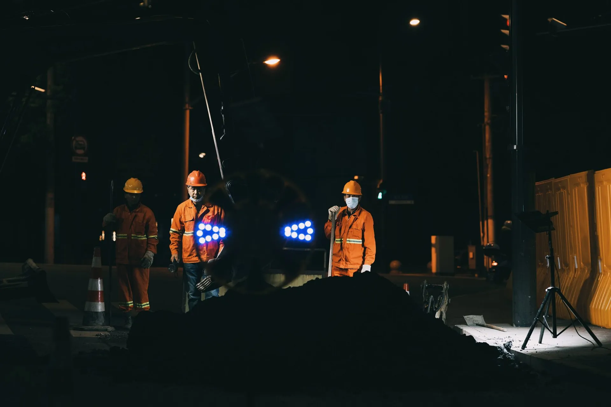

1MMetrów bieżących
18MTon urobku wydobytego łącznie
4,8kMiejsc pośrednich
1,5kObecnych miejsc pracy
9Aktywne projekty
41Ukończone projekty
SkalMin to czołowy wykonawca robót pod ziemią, z siedzibą zarządu oraz centralnym warsztatem maszyn w Kielcach, w Polsce.
Łącząc głęboką wiedzę geologiczną oraz kunszt inżynierów, pracujemy ramię w ramię z klientami, zamieniając surowy potencjał w operacyjną doskonałość.
Złoto : 600 ton wydobytych w 2025
Srebro : 540 ton wydobytych w 2024
Ołów : 712 ton wydobytych w 2025
Miedź : 826 ton wydobytych w 2023
Cynk : 298 ton wydobytych w 2022
W SkalMin wierzymy mocno w to, że wypadki oraz choroby zawodowe można przewidzieć, i to na nich skupiamy nasze siły, by decyzje i działania co dzień ograniczały zdarzenia z udziałem ludzi i naszego sprzętu.
Nasza flota podziemna liczy łącznie ponad 360 maszyn specjalnych z kluczowych kategorii robót. Każdą z nich dobieramy dla trwałości, bezpieczeństwa i pracy w ciasnych, trudnych warunkach.
„Lubię tu pracować, bo ta firma ma mocną markę i świetną renomę w regionie oraz w całym kraju. Jestem z tego dumny, że ją reprezentuję.”
— Marek Antoni Zieliński Kos
„Dzięki SkalMin mogę się rozwinąć i już mam dla rodziny dużo lepsze jutro niż jeszcze rok temu.”
— Paweł Kaczmarek Wójcik
Wiodące spółki górnicze ufają SkalMin w prowadzeniu swoich robót pod ziemią z bezpieczeństwem, precyzją i dobrym wynikiem.
